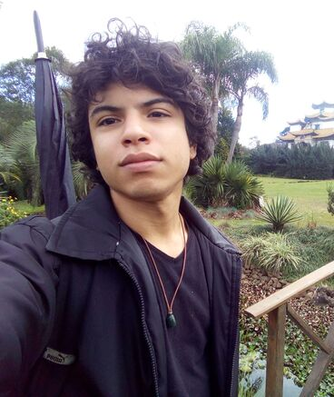

Sobre mim:
Bem-vindo à minha página de demonstração, onde compartilho o resultado dedicado dos meus estudos em HTML, CSS e JavaScript. Este espaço não é apenas uma vitrine das minhas habilidades, mas também o reflexo do meu compromisso em conquistar meu tão sonhado primeiro estágio!
Para além do mundo do desenvolvimento, tenho paixões que me moldam. Jardinagem, acampar, cozinhar, assistir filmes e séries são paixões pra vida.
Minhas habilidades incluem bases em Front-end, C# e .Net, além de SQL, e navego habilmente pelo Excel e powerBI.
